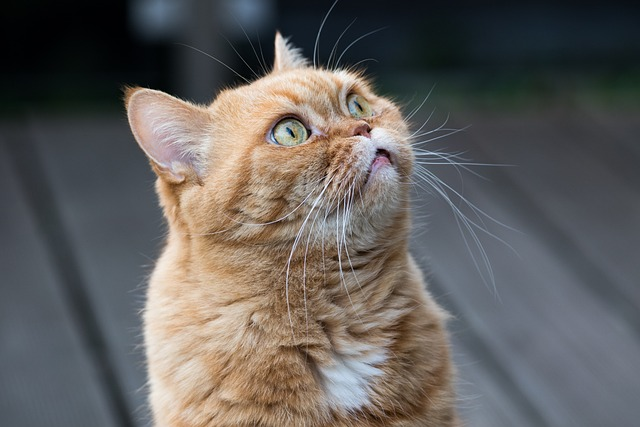
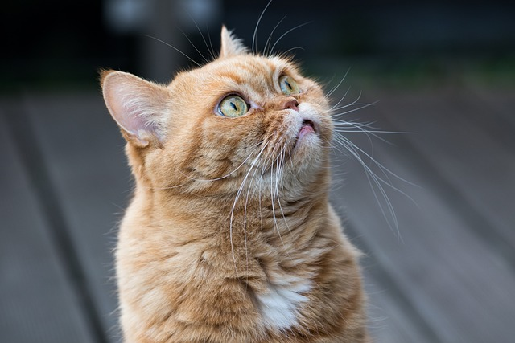

A macska, más néven házi macska (Felis silvestris catus) kisebb termetű húsevő emlős, ami a ragadozók rendjén belül a macskafélék (Felidae) családjának Felis neméhez és vadmacska (Felis silvestris) fajához tartozik. A vadmacska alfaja. Ügyes ragadozó, több mint 1000 faj tekinthető a zsákmányának. Emellett meglehetősen intelligens, beidomítható egyszerű parancsok végrehajtására vagy szerkezetek működtetésére – illetve képes önállóan is kisebb feladatok betanulására.

Körülbelül 10 000 évvel ezelőtt kezdett az ember társaságában élni, háziasításának első ábrázolása mintegy 4000 éve Egyiptomban történt.
2004-ben Jean-Denis Vigne és kollégái (Nemzeti Természettudományi Múzeum, Párizs) jelentése a macska háziasítására vonatkozó legkorábbi tárgyi bizonyíték feltárásával foglalkozik. A lelet egy ciprusi emberi sírból került elő, melyben egy meghatározatlan nemű felnőtt ember és egy macska csontjai találhatók. A lelet mintegy 9500 éves. A sírból a csontok mellett kőszerszámok, vasoxid-maradványok, maroknyi tengeri kagyló és (az emberi csontoktól 40 cm-re) a saját sírjából egy nyolc hónapos macska csontváza került elő, melyet az emberrel megegyezően nyugati irányba nézve fektettek. Mivel a macska nem őshonos a Mediterrán medence szigetein, ezért csak a szárazföldről kerülhetett oda, minden bizonnyal a közeli levantei partokról. A lelet az ember és a macska tudatos együttélésének bizonyítéka kb. 10 000 évvel ezelőttről a mai Közel-Keletnek nevezett területen. Ez összhangban van a genetikai kutatások eredményeivel is, melyek szintén ezt a földrajzi és időbeli eredetet erősítik. Úgy tűnik, a macska háziasítása az első emberi települések létrejöttének idején, a neolitikus korban történhetett a termékeny félholdként ismert területen.
A macskának számos fajtája és színváltozata létezik. Csupasz és farok nélküli változatait is kitenyésztették. A macskák több mint százféle hangjel és testbeszéd segítségével kommunikálnak, mint például nyávogás, dorombolás, bújás, fújás, morgás, perregés. A lovakhoz és más háziállatokhoz hasonlóan a macskák is képesek vadon élve fennmaradni. Az önállóan élő macskák gyakran kisebb kolóniákat alkotnak. Az állatvédők beszámolói szerint azonban hosszú távon csak igen kevés példány képes gazdátlanul életben maradni, többségüket elpusztítják a járművek, a ragadozók, az éhség, az időjárás viszontagságai és a betegségek. Ezért számos országban, köztük hazánkban is a macskák és más társállatok elhagyása, illetve otthonukból való szándékos eltávolítása (bántalmazásukhoz hasonlóan) büntetendő. A macska sok kultúra legendáiban és mítoszaiban tölt be jelentős szerepet, az egyiptomiak, a kínaiak és a vikingek ősi történeteiben is szerepel. Általában tisztelik, de olykor becsmérlik is.
 
